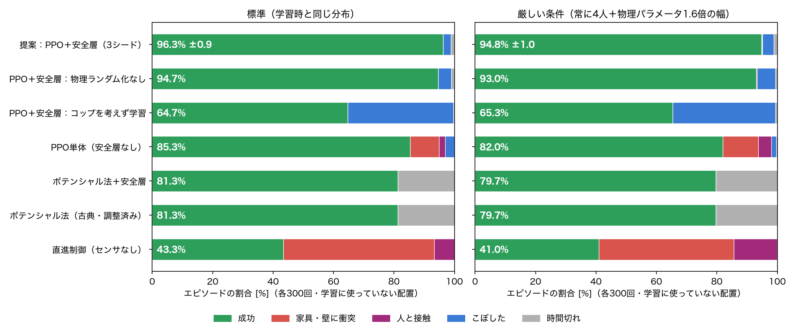
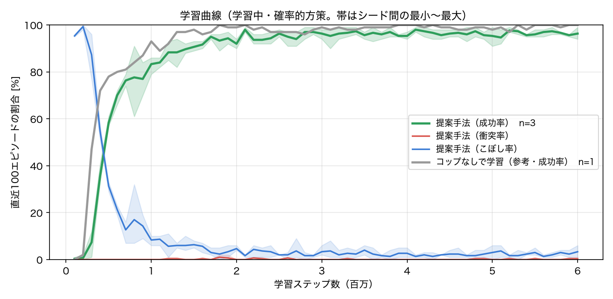

2輪ロボットの天板に固定していないコップを載せ、テーブル・椅子の配置も歩く人も毎回変わるレストランで、 指定されたテーブルの横まで運んで止まって渡すタスクを設計した。 コップは MuJoCo 上の剛体なので、急加速・急停止・衝突で実際に倒れる。 LiDAR などのセンサ情報から車輪の速度指令を出す方策を強化学習（PPO）で獲得し、 「残り距離でコップをこぼさずに止まれる速度」を上限とする安全層と組み合わせた。
配膳ロボットはすでに飲食店で使われているが、人の多い店内でトレーの上の飲み物をこぼさず運ぶには、 ①ぶつからない ②こぼさない ③目的地で止まるを同時に満たす必要がある。 「ぶつからない」だけなら古典的な手法でも実現できるが、物を運ぶ品質（加速度）と、到着の速さ・確実さは互いにぶつかり合う。 本課題の目的は、この複数の要求を報酬として与えるだけで、学習によって両立する動き方を獲得できるかを確かめること、 そしてどの工夫が効いているのかを比較実験で数値として示すことである。
| 要素 | 内容 |
|---|---|
| シミュレータ | MuJoCo 3.17（物理 200 Hz、制御 20 Hz）。摩擦・接触・慣性を含む。課題で認められている「他のツール」として選択した（理由は付録） |
| 店内 | 8 m × 6 m。円形テーブル 4〜6卓と椅子をランダム配置。0〜4人が店内を歩く（ロボットが正面にいると立ち止まる） |
| ロボット | 左右独立駆動の2輪（最高 0.8 m/s）。天板にコップ（剛体、質量 0.3 kg、直径 7 cm・高さ 12 cm） |
| 観測（81次元） | LiDAR 36本の距離と前時刻からの変化（人の動きを捉える）／ゴールの距離・方位／速度・角速度／IMU加速度／直前に実行された指令 |
| 行動 | 左右の車輪の速度指令（連続値） |
| 方策 | 多層パーセプトロン 256×256、PPO（Stable-Baselines3）、8並列・600万ステップ（1本 約20分、CPUのみ） |
| 安全層 | 進行方向 ±50° の LiDAR 距離 d から、速度上限 vmax = √(2·a·(d − 0.05))（a = 1.5 m/s²：コップが倒れない減速度）。後退は 0.25 m/s まで |
| 到着判定 | ゴールの円（半径 25 cm）内で 0.25 m/s 未満になったら、安全層と同じ減速度で完全に停止させ、停止後もコップが立っていれば配膳成功（学習・評価とも） |
| 報酬 | ゴールに近づいた距離 ×3、配膳成功 +10、衝突 −10、こぼす −5、 2 m/s² を超える加速度、人・障害物への接近、後退、安全層の介入量にそれぞれ小さな負の報酬 |
| ランダム化 | 毎エピソード：店内配置・人数・歩行速度／車体質量 ±25%・コップ質量と摩擦 ±30%・車輪摩擦・モーター特性 ±30%／LiDAR 雑音（σ = 2 cm）と欠測 2% |
results/pf_tuning.txt）。
さらに古典手法にも同じ安全層を付けた場合を比較し、安全層の効果だけで差がついていないかを確かめた。評価は、学習・チューニングに使っていない店内配置（シード 100000〜100299）での決定的な方策による。
| 手法 | 成功 | 家具・壁に衝突 | 人と接触 | こぼした | 時間切れ | 成功時の所要時間 |
|---|---|---|---|---|---|---|
| 直進制御（センサなし） | 43.3% | 50.0% | 6.7% | 0.0% | 0.0% | 7.2 秒 |
| ポテンシャル法（古典・調整済み） | 81.3% | 0.0% | 0.0% | 0.0% | 18.7% | 10.9 秒 |
| ポテンシャル法＋安全層 | 81.3% | 0.0% | 0.0% | 0.0% | 18.7% | 10.9 秒 |
| PPO単体（安全層なし） | 85.3% | 9.7% | 2.0% | 3.0% | 0.0% | 6.3 秒 |
| PPO＋安全層／コップなしで学習 | 64.7% | 0.0% | 0.0% | 35.0% | 0.3% | 6.6 秒 |
| PPO＋安全層／物理ランダム化なし | 94.7% | 0.0% | 0.0% | 4.3% | 1.0% | 6.8 秒 |
| 提案：PPO＋安全層（3シード平均±標準偏差） | 96.3% ±0.9 | 0.0% | 0.0% | 2.6% | 1.1% | 6.9 秒 |
| 手法 | 成功 | 家具・壁に衝突 | 人と接触 | こぼした | 時間切れ | 成功時の所要時間 |
|---|---|---|---|---|---|---|
| 直進制御（センサなし） | 41.0% | 44.7% | 14.3% | 0.0% | 0.0% | 6.8 秒 |
| ポテンシャル法（古典・調整済み） | 79.7% | 0.0% | 0.0% | 0.0% | 20.3% | 12.1 秒 |
| ポテンシャル法＋安全層 | 79.7% | 0.0% | 0.0% | 0.0% | 20.3% | 12.1 秒 |
| PPO単体（安全層なし） | 82.0% | 11.7% | 4.3% | 1.7% | 0.3% | 6.3 秒 |
| PPO＋安全層／コップなしで学習 | 65.3% | 0.0% | 0.0% | 34.0% | 0.7% | 6.8 秒 |
| PPO＋安全層／物理ランダム化なし | 93.0% | 0.3% | 0.0% | 6.0% | 0.7% | 7.1 秒 |
| 提案：PPO＋安全層（3シード平均±標準偏差） | 94.8% ±1.0 | 0.1% | 0.2% | 3.8% | 1.1% | 7.1 秒 |


| 起きたこと | 原因 | 対処 |
|---|---|---|
| 障害物をすり抜ける（初期版） | MuJoCo の静止体は実行時に動かしても当たり判定が元の位置に残る | 動く物はすべて mocap ボディにした |
| コップが空高く吹き飛ぶ | 質量を変えた後に派生定数を再計算していなかった | mj_setConst を呼ぶ |
| 静かに走ってもコップがずれていく（30秒で 9 cm） | 柔らかい接触によるクリープ | 楕円摩擦円錐・impratio・ねじれ摩擦（30秒で 1 cm 未満に） |
| 学習した方策がバックで椅子に突っ込む（衝突 約20%） | 報酬だけでは狭い場所での減速を学べない | 物理に基づく安全層を導入 |
| 後ろ向きに走り続ける抜け道 | 安全層の速度上限を利用 | 介入量への罰（上記 工夫3） |
| 「配膳完了」の直後にコップが倒れていた | 到着の瞬間に成功として打ち切っていたため、方策が全速でゴールに突っ込み急停止していた（判定の穴） | 到着後に完全停止させ、コップが立っていることを成功の条件にして全モデルを学習し直した |
いずれも「結果が良すぎる・不自然」と感じた時点で、単純な再現実験を作って原因を確かめてから直した。初期版の結果（すり抜けによる見かけの成功）は破棄している。
MuJoCo 3.17 / Gymnasium / Stable-Baselines3 2.9 / PyTorch（CPUのみ、MacBook Air M3）。
ROS 2 + Gazebo ではなく MuJoCo を選んだのは、(1) コップのような小物体の接触・摩擦を細かく設定でき、(2) 1秒に数千ステップの速さで強化学習を回せるためである。
方策の推論は1回 0.07 ミリ秒で、20 Hz 制御に十分間に合う。
コード一式・学習済みモデル・評価結果は GitHub の公開リポジトリにあり、README の手順で再現できる（evaluate.py と make_video.py は学習なしで実行可能）。
動画は等倍速を基本とし、2倍速の区間と0.4倍速（スロー）の区間は画面右上に明記した。